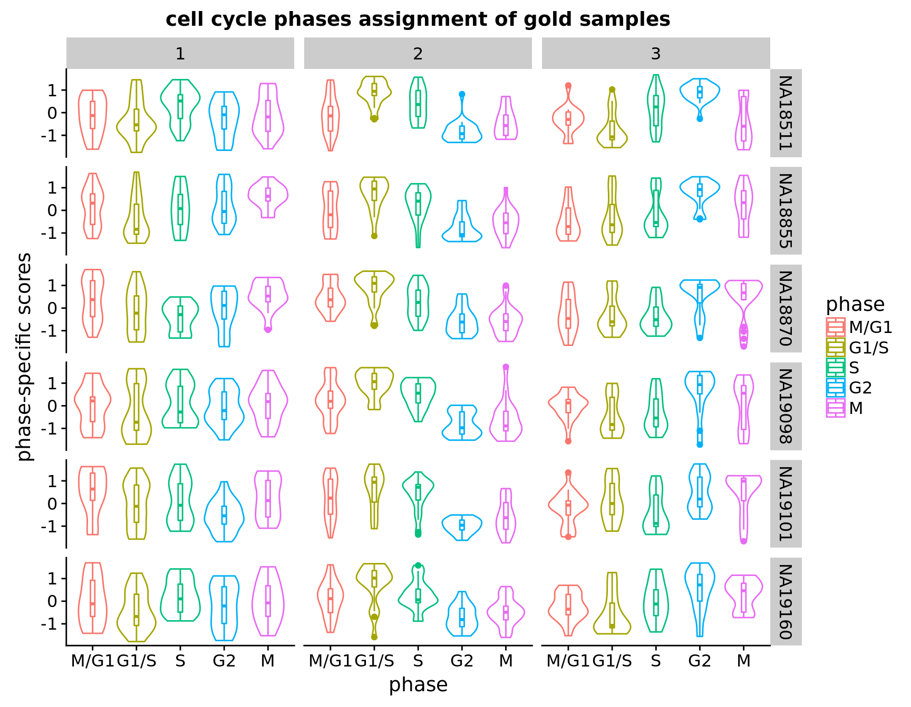
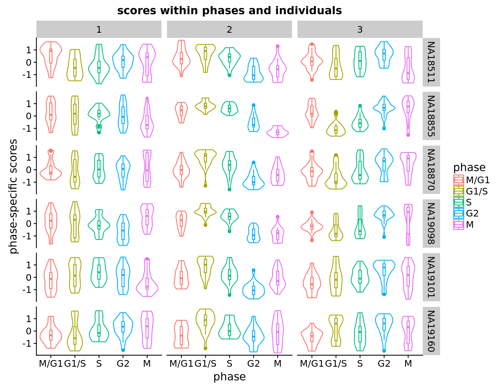
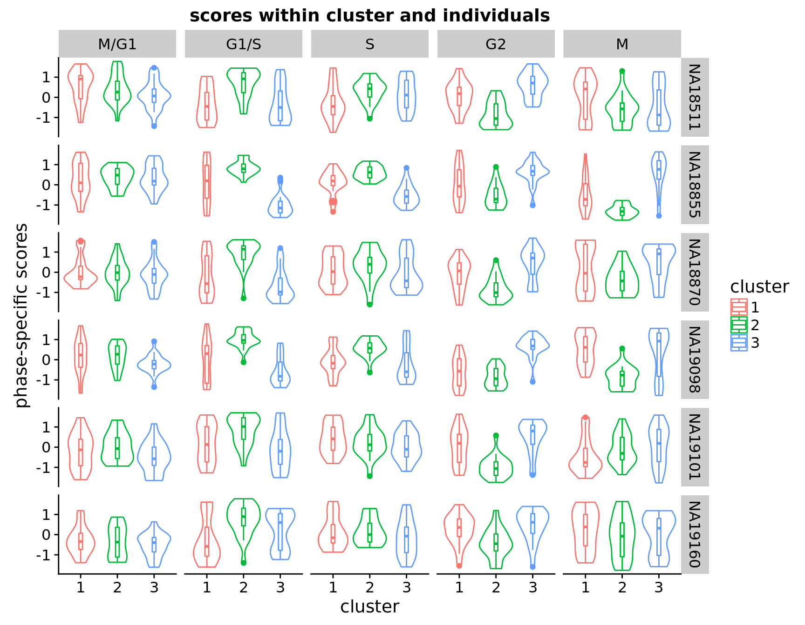
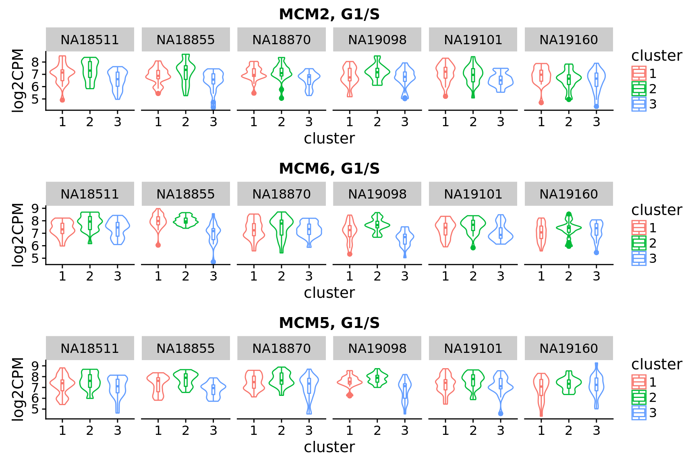
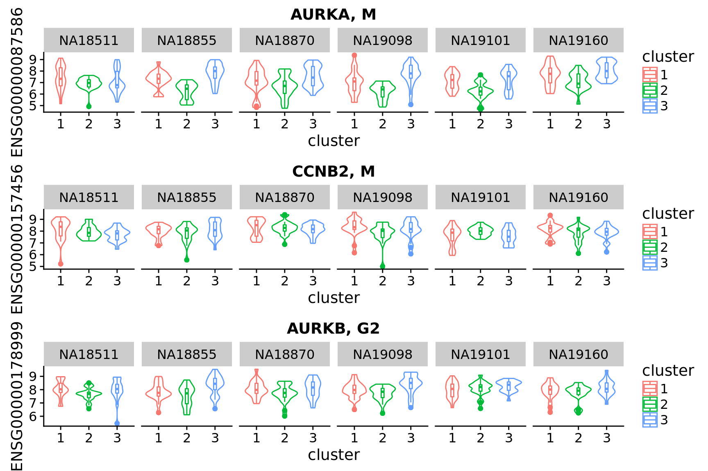

Last updated: 2018-02-01
Code version: 2e1a616
The goal here is to assess the expression profiles of samples within the assigned clusters based on FUCCI measures (see here for details).
Results from within individaul analysis show that for cluster 3, the scores peak at G2, and for cluster 2, scores peak at G1/S. However, for cluster 1, the peaks are variable across individuals. For example, NA18870, NA19160 and NA19101 peaks at M/G1, while NA18511 peaks at S.
Note that the genes used for the analysis were previously identified as “variable” or “cell cycle regulating” genes in Macosko et al. 2015. Applying the 544 genes in their results, we found 200 to 300 genes identified as “variable” in expression profiles along cell cycle phases. (NA18855 219 cells, NA18870 198 cells, NA19098 165 cells, NA19101 255 cells, NA19160 314 cells, NA18511 239 cells)
For validity of the phase scores, we further apply the same method to data in Leng et al. 2015, which have been previously scored for cell cycle phases also using FUCCI measurse.
Packages
library(Biobase)
library(ggplot2)
library(cowplot)
library(data.table)
library(tidyr)
library(gplots)Load data
df <- readRDS(file="../data/eset-filtered.rds")
pdata <- pData(df)
fdata <- fData(df)
# select endogeneous genes
counts <- exprs(df)[grep("ERCC", rownames(df), invert=TRUE), ]
# cpm normalization
log2cpm <- log2(t(t(counts+1)*(10^6)/colSums(counts)))select cell cycle genes
cellcycle <- readRDS("../data/cellcycle-genes-previous-studies/rds/macosko-2017.rds")
which_cc <- which(rownames(log2cpm) %in% cellcycle$ensembl)
log2cpm_cc <- log2cpm[which_cc, ]
cc_genes <- cellcycle[which(cellcycle$ensembl %in% rownames(log2cpm_cc)),]intensity data
ints <- with(pdata, data.frame(rfp.median.log10sum,
gfp.median.log10sum,
chip_id))Load best subset. si_pam.rda contains two objects: si_pam_25 (top 25 samples within clusters and individuals) and si_pam_long (all sample information on silhouette index).
load(file = "../output/images-subset-silhouette.Rmd/si_pam.rda")subset to the best samples
log2cpm_cc_top <- log2cpm_cc[, colnames(log2cpm) %in% unique(si_pam_25$unique_id)]
pdata_top <- pdata[rownames(pdata) %in% unique(si_pam_25$unique_id),]
all.equal(colnames(log2cpm_cc_top), rownames(pdata_top))[1] TRUECompute phase-specific score for within clusters and individuals. This method was previously used in Macosko et al. 2015 for identifying gene expression patterns that varied along cell cycle phases, and for summarizing cell cycle phase profile for single cell samples.
We applied the 544 genes identified as varied in Macosko et al. 2015 and identified 230 genes that varied in expression patterns.
The method was applied to log2CPM normalized data. Briefly,
Identify the variable genes wihtin each cell cycle phase: compute for each cell-cycle phase, correlation between per-gene expression level and mean gene expression levels across all single cell samples. Select genes with correlation > .3.
Compute phase-specific score: compute average expression across genes for each single cell samples.
Standardize phase-specific scores in two-steps: within each phase, standardize (transforming to z-scores) scores across single cell samples, and then within each single cell sample, standardize scores across phase.
chip_ids <- unique(pdata_top$chip_id)
all.equal(rownames(pdata_top), colnames(log2cpm_cc_top))[1] TRUEcc_scores_within <- lapply(1:uniqueN(pdata_top$chip_id), function(j) {
id <- chip_ids[j]
samples_to_select <- rownames(pdata_top)[which(pdata_top$chip_id == id)]
cc_scores_list <- lapply(1:uniqueN(cc_genes$phase), function(i) {
ph <- unique(cc_genes$phase)[i]
df_sub <- log2cpm_cc_top[rownames(log2cpm_cc_top) %in% cc_genes$ensembl[cc_genes$phase == ph], samples_to_select]
mn <- colMeans(df_sub)
cc <- cor(t(rbind(mn, df_sub)))
cc_mean <- cc[-1,1]
genes_cc <- names(cc_mean)[which(cc_mean > .3)]
scores_raw <- colMeans(df_sub[rownames(df_sub) %in% genes_cc,])
scores_z <- scale(scores_raw)
return(list(scores_z=scores_z, ngenes =length(genes_cc)))
})
names(cc_scores_list) <- unique(cc_genes$phase)
return(cc_scores_list)
})
names(cc_scores_within) <- chip_ids
ngenes_within <- lapply(cc_scores_within, function(x) {
sapply(x, function(y) y[[2]])
})
ngenes <- sapply(ngenes_within, function(x) sum(x))
print(ngenes)NA18855 NA18870 NA19098 NA19101 NA19160 NA18511
219 198 165 255 314 239 cc_scores <- lapply(cc_scores_within, function(x) {
tmp <- do.call(cbind, lapply(x, "[[", 1))
colnames(tmp) <- unique(cc_genes$phase)
return(tmp)
})
# standardize scores across phases
cc_scores_z <- lapply(cc_scores, function(x) {
tmp <- t(apply(x, 1, scale))
colnames(tmp) <- unique(cc_genes$phase)
tmp <- as.data.frame(tmp)
return(tmp)
})
# convert data format from wide to long
cc_scores_z_long <- lapply(cc_scores_z, function(x) {
long <- gather(x, key=phase, value=scores)
long$uniqe_id <- rep(rownames(x), ncol(x))
long$chip_id <- pdata_top$chip_id[match(long$uniqe_id, rownames(pdata_top))]
long$experiment <- pdata_top$experiment[match(long$uniqe_id, rownames(pdata_top))]
# select gold standard set
long$cluster <- si_pam_25$cluster[match(long$uniqe_id, si_pam_25$unique_id)]
long$phase <- factor(long$phase, levels=c("M/G1", "G1/S", "S", "G2", "M"))
long$cluster <- as.factor(long$cluster)
return(long)
})
cc_scores_list <- lapply(1:uniqueN(cc_genes$phase), function(i) {
ph <- unique(cc_genes$phase)[i]
df_sub <- log2cpm_cc_top[rownames(log2cpm_cc_top) %in% cc_genes$ensembl[cc_genes$phase == ph],]
mn <- colMeans(df_sub)
cc <- cor(t(rbind(mn, df_sub)))
cc_mean <- cc[-1,1]
genes_cc <- names(cc_mean)[which(cc_mean > .3)]
scores_raw <- colMeans(df_sub[rownames(df_sub) %in% genes_cc,])
scores_z <- scale(scores_raw)
return(list(scores_z=scores_z, ngenes =length(genes_cc)))
})
names(cc_scores_list) <- unique(cc_genes$phase)
ngenes <- sapply(cc_scores_list, "[[", 2)
cc_scores <- do.call(cbind, lapply(cc_scores_list, "[[", 1))
colnames(cc_scores) <- unique(cc_genes$phase)
# standardize scores across phases
cc_scores_z <- t(apply(cc_scores, 1, scale))
colnames(cc_scores_z) <- unique(cc_genes$phase)
cc_scores_z <- as.data.frame(cc_scores_z)
# convert data format from wide to long
cc_scores_z_long <- gather(cc_scores_z, key=phase, value=cc_scores_z)
cc_scores_z_long$uniqe_id <- rep(rownames(cc_scores_z), ncol(cc_scores_z))
cc_scores_z_long$chip_id <- pdata$chip_id[match(cc_scores_z_long$uniqe_id, rownames(pdata))]
cc_scores_z_long$experiment <- pdata$experiment[match(cc_scores_z_long$uniqe_id, rownames(pdata))]
# select gold standard set
cc_scores_z_long$cluster <- si_pam_25$cluster[match(cc_scores_z_long$uniqe_id, si_pam_25$unique_id)]
cc_scores_z_long$phase <- factor(cc_scores_z_long$phase,
levels=c("M/G1", "G1/S", "S", "G2", "M"))
cc_scores_z_long$cluster <- as.factor(cc_scores_z_long$cluster)

Look up “classical cell cycle genes” listed in Macosko et al. 2015 and see their patterns across the assigned clusters.
hgnc <- c("CCNB1", "CCNB2", "MCM2", "MCM3", "MCM4", "MCM5", "MCM6",
"MCM7", "MCM10", "AURKA", "AURKB")
ensg <- cc_genes$ensembl[which(cc_genes$hgnc %in% hgnc)]
tmp <- log2cpm_cc[which(rownames(log2cpm_cc) %in% ensg),]
tmp <- data.frame(t(tmp))
cc_scores_z_long$ENSG00000073111 <- tmp$ENSG00000073111[match(cc_scores_z_long$uniqe_id, rownames(tmp))]
cc_scores_z_long$ENSG00000076003 <- tmp$ENSG00000076003[match(cc_scores_z_long$uniqe_id, rownames(tmp))]
cc_scores_z_long$ENSG00000087586 <- tmp$ENSG00000087586[match(cc_scores_z_long$uniqe_id, rownames(tmp))]
cc_scores_z_long$ENSG00000076003 <- tmp$ENSG00000076003[match(cc_scores_z_long$uniqe_id, rownames(tmp))]
cc_scores_z_long$ENSG00000100297 <- tmp$ENSG00000100297[match(cc_scores_z_long$uniqe_id, rownames(tmp))]
cc_scores_z_long$ENSG00000157456 <- tmp$ENSG00000157456[match(cc_scores_z_long$uniqe_id, rownames(tmp))]
cc_scores_z_long$ENSG00000178999 <- tmp$ENSG00000178999[match(cc_scores_z_long$uniqe_id, rownames(tmp))]
R version 3.4.1 (2017-06-30)
Platform: x86_64-pc-linux-gnu (64-bit)
Running under: Scientific Linux 7.4 (Nitrogen)
Matrix products: default
BLAS: /home/joycehsiao/miniconda3/envs/fucci-seq/lib/R/lib/libRblas.so
LAPACK: /home/joycehsiao/miniconda3/envs/fucci-seq/lib/R/lib/libRlapack.so
locale:
[1] LC_CTYPE=en_US.UTF-8 LC_NUMERIC=C
[3] LC_TIME=en_US.UTF-8 LC_COLLATE=en_US.UTF-8
[5] LC_MONETARY=en_US.UTF-8 LC_MESSAGES=en_US.UTF-8
[7] LC_PAPER=en_US.UTF-8 LC_NAME=C
[9] LC_ADDRESS=C LC_TELEPHONE=C
[11] LC_MEASUREMENT=en_US.UTF-8 LC_IDENTIFICATION=C
attached base packages:
[1] parallel stats graphics grDevices utils datasets methods
[8] base
other attached packages:
[1] gplots_3.0.1 tidyr_0.7.1 data.table_1.10.4
[4] cowplot_0.9.1 ggplot2_2.2.1 Biobase_2.38.0
[7] BiocGenerics_0.24.0
loaded via a namespace (and not attached):
[1] Rcpp_0.12.14 knitr_1.17 magrittr_1.5
[4] munsell_0.4.3 colorspace_1.3-2 rlang_0.1.4.9000
[7] stringr_1.2.0 plyr_1.8.4 caTools_1.17.1
[10] tools_3.4.1 grid_3.4.1 gtable_0.2.0
[13] KernSmooth_2.23-15 git2r_0.19.0 gtools_3.5.0
[16] htmltools_0.3.6 yaml_2.1.16 lazyeval_0.2.0
[19] rprojroot_1.2 digest_0.6.12 tibble_1.3.3
[22] reshape2_1.4.2 purrr_0.2.2 bitops_1.0-6
[25] glue_1.1.1 evaluate_0.10.1 rmarkdown_1.8
[28] labeling_0.3 gdata_2.17.0 stringi_1.1.2
[31] compiler_3.4.1 scales_0.4.1 backports_1.0.5 This R Markdown site was created with workflowr